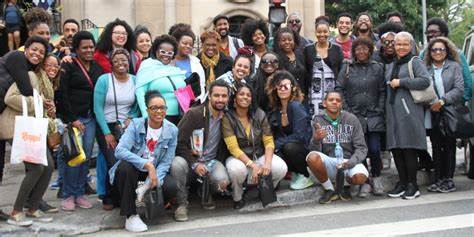

Negros
A etnia parda é resultado de uma rica miscigenação entre diferentes grupos étnicos, como indígenas, brancos e negros, que moldou a identidade brasileira. Essa mistura é reflexo da história do país, marcada pela colonização, escravidão e convívio cultural. Os pardos desempenharam um papel crucial na formação da sociedade brasileira, contribuindo para a diversidade cultural e étnica que caracteriza o país. Sua influência pode ser percebida na música, na culinária, nas artes e em muitos aspectos da vida cotidiana.Apesar disso, a etnia parda também enfrenta desafios, como a discriminação racial e a desigualdade socioeconômica. O combate ao racismo e a promoção da igualdade são fundamentais para construir uma sociedade mais justa e inclusiva, onde a identidade parda seja valorizada e respeitada.É essencial que todos compreendam e reconheçam a importância da etnia parda na história e na cultura do Brasil, bem como trabalhem para criar um ambiente onde a diversidade é celebrada e as oportunidades são equitativas para todos, independentemente da origem étnica.